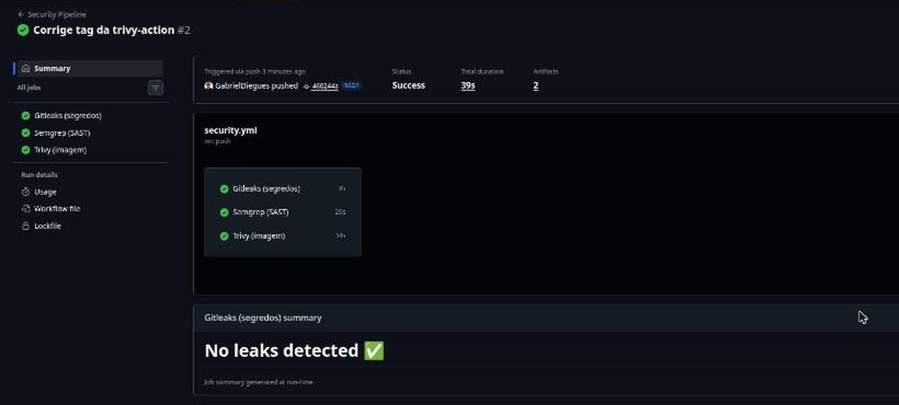
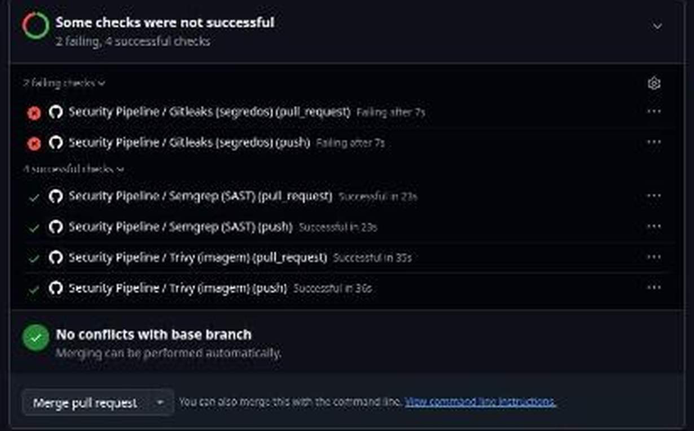
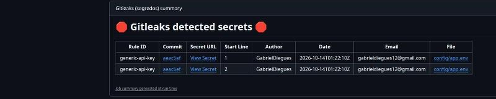
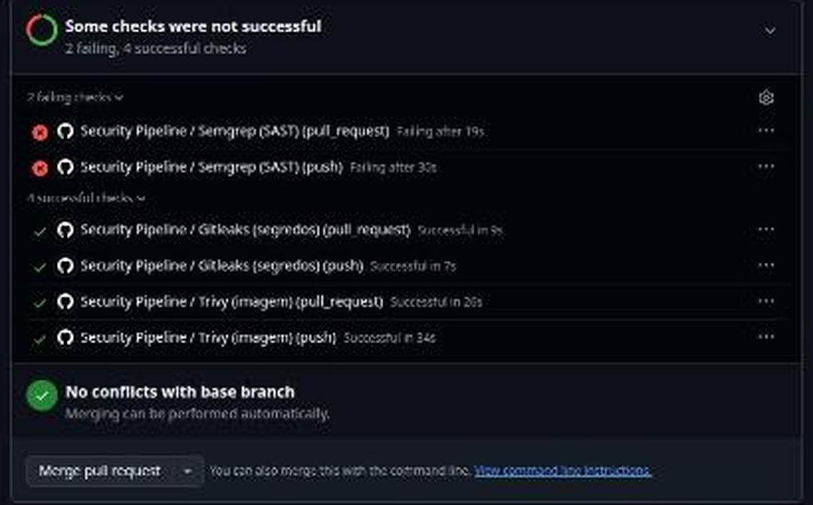
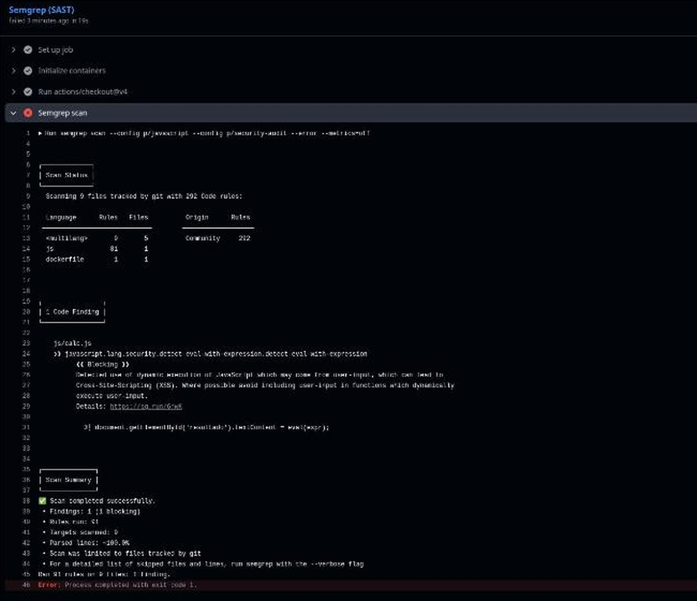
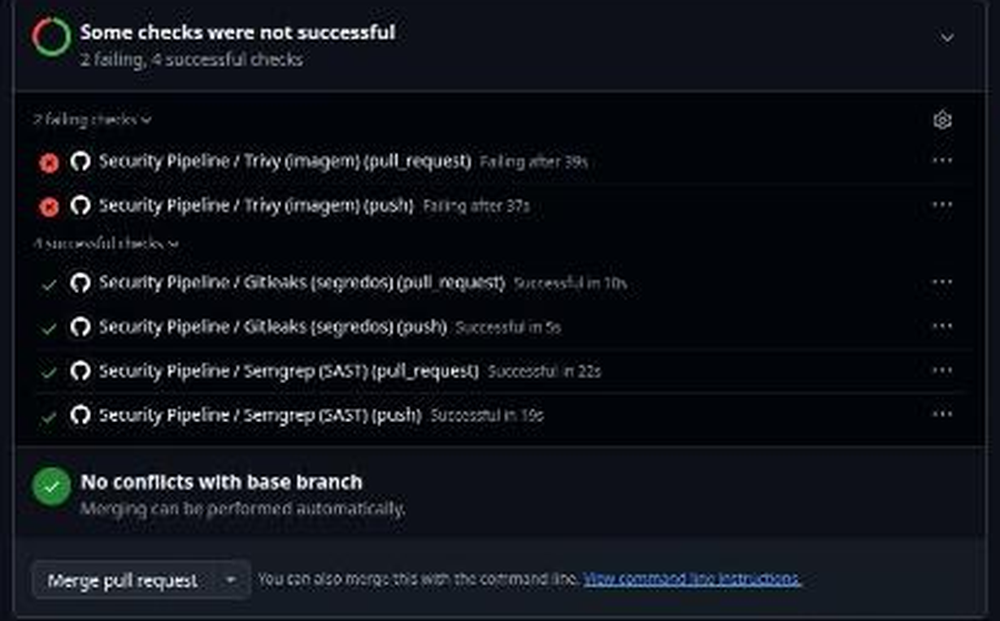
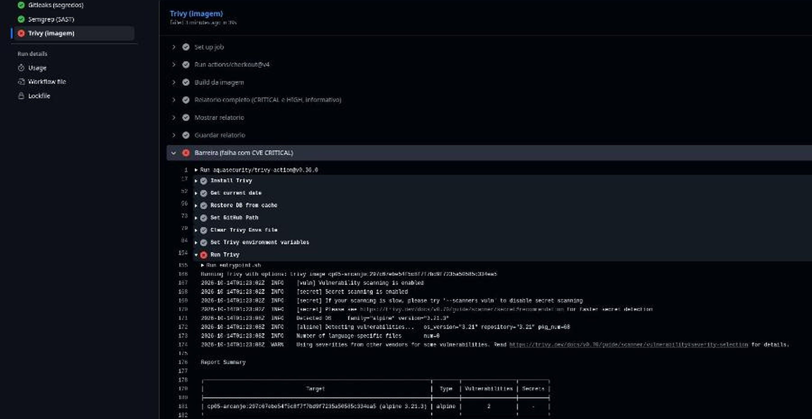

| Aluno | Gabriel Diegues Figueiredo Rocha |
| RM | 550788 |
| Turma | 4ESPV |
| Repositório | github.com/GabrielDiegues/cp05-devsecops-pipeline |
| Workflow | .github/workflows/security.yml |
| Data | 13/10/2026 |
O workflow security.yml roda em todo push e pull_request e
tem três jobs independentes, cada um uma barreira. Na main os três passam; para provar
que as barreiras funcionam, cada uma recebeu um Pull Request de sabotagem que a faz falhar
(os PRs ficam abertos, sem merge).
Os três jobs (Gitleaks, Semgrep e Trivy) concluem com sucesso no código limpo.

O Gitleaks varre o código e todo o histórico do git (fetch-depth: 0) atrás de
segredos, como chaves de API, tokens e senhas, usando regras de padrão e entropia. Isso importa porque um
segredo, uma vez commitado, fica no histórico mesmo que o arquivo seja apagado depois, exatamente o que
aconteceu com a chave vazada da Arcanjo. Na sabotagem (PR #1) adicionei config/app.env com uma
chave de API e uma senha falsas. O job falhou e o resumo aponta a regra generic-api-key, o commit,
o arquivo e as linhas 1 e 2, então o merge fica bloqueado antes de o segredo chegar à main.
Apenas o Gitleaks fica vermelho; Semgrep e Trivy continuam verdes.

Resumo do job: dois achados da regra generic-api-key em config/app.env.

O Semgrep faz análise estática do código-fonte (SAST), sem executá-lo, comparando-o a regras
de segurança (aqui os conjuntos p/javascript e p/security-audit). Com --error,
qualquer achado bloqueante derruba o job. Na sabotagem (PR #2) criei js/calc.js, que passa
location.hash, controlado pelo usuário, direto para eval(). O Semgrep apontou a regra
javascript.lang.security.detect-eval-with-expression, que alerta para execução dinâmica de código
e risco de XSS, indicando a linha exata, e o job terminou com exit code 1.
Apenas o Semgrep fica vermelho; Gitleaks e Trivy continuam verdes.

Log do job: 1 achado bloqueante em js/calc.js, linha com eval(expr).

O Trivy constrói a imagem do Dockerfile e a escaneia em busca de CVEs nos pacotes
do sistema operacional. O job tem dois passos: um relatório informativo (CRITICAL e HIGH, sem falhar), guardado
como artifact, e a barreira, que falha com qualquer CVE CRITICAL que já tenha correção
disponível (ignore-unfixed).
Análise do resultado. A base original do CP04, nginx:1.27-alpine (Alpine 3.21),
tem 2 CVEs CRITICAL, os dois a mesma falha no OpenSSL: CVE-2026-31789, um estouro de buffer
de heap em sistemas 32 bits, nos pacotes libcrypto3 e libssl3, versão instalada
3.3.3-r0, corrigida na 3.3.7-r0. O mesmo scan também lista dezenas de vulnerabilidades
HIGH, MEDIUM e LOW. Como há correção, a barreira reprovou o PR #3. A correção é trocar a base para
nginx:1.30-alpine (Alpine 3.24), com 0 CVEs CRITICAL, versão que está na main e passa.
É um risco real porque o OpenSSL está em toda imagem baseada em Alpine. Como a tag é fixa, a imagem não se atualiza
sozinha, e é o scan automático a cada commit que avisa quando uma base envelhece.
Imagem com base nginx:1.27-alpine reprovada; Gitleaks e Semgrep continuam verdes.

Passo de barreira: o relatório mostra 2 vulnerabilidades CRITICAL na imagem (Alpine 3.21), e o step termina em erro.
